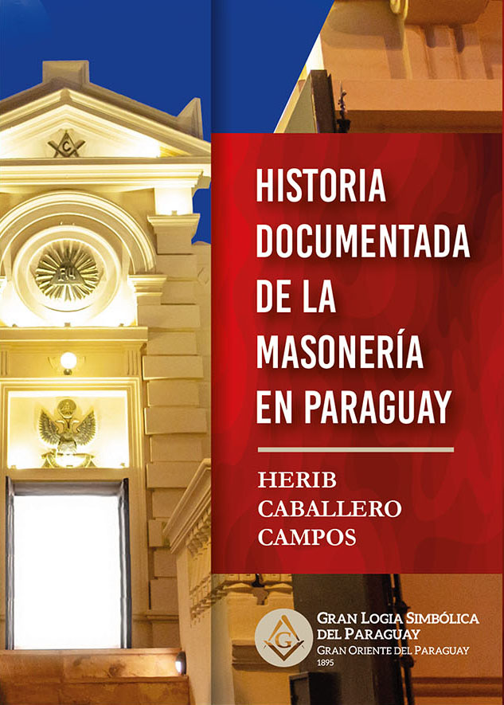

Un recorrido exhaustivo por más de 150 años de historia masónica en el Paraguay. Basada en fuentes primarias, documentos de archivo y una investigación histórica sin precedentes. Una obra imprescindible para la historiografía nacional y masónica.
Elaborada con el acervo del Gran Archivo Histórico de la GLSP: 795 biblioratos, 95 libros de actas y 219.859 folios. La investigación documental más completa jamás realizada sobre la masonería paraguaya.
Sigue la continuidad histórica desde la primera Logia "Fe" fundada en 1869, el Gran Oriente del Paraguay (1895) y la Gran Logia Simbólica del Paraguay fundada el 13 de mayo de 1923, hasta el presente.
Primera obra que aplica criterios científicos de la historia para corregir mitos e informaciones inexactas que durante décadas fueron tomadas como verdaderas sobre la masonería paraguaya.
Las primeras logias masónicas en el Paraguay tras la Guerra de la Triple Alianza. La fundación de las Logias Fe y Unión Paraguaya N°30. Los primeros masones y su rol en la reconstrucción nacional.
La fundación del Serenísimo Gran Oriente del Paraguay en 1894. Las tensiones institucionales y el camino hacia la independencia del Simbolismo masónico paraguayo.
El nacimiento de la Gran Logia Simbólica del Paraguay como entidad independiente el 13 de mayo de 1923 y su proyección internacional.
La participación fundadora en la Confederación Masónica Interamericana en 1947. Los tratados de reconocimiento mutuo con más de 70 Grandes Logias.
Los cismas de 1996 y 2005. La continuidad del tronco histórico regular y el reconocimiento internacional de la GLSP como la legítima obediencia masónica del Paraguay.
El presente y el futuro. 82 logias, 2.472 hermanos, 28 templos activos y proyección cultural e institucional a nivel internacional.
Una publicación presentada por la Gran Logia Simbólica del Paraguay. Fundada en 1923 · Reconocida internacionalmente.